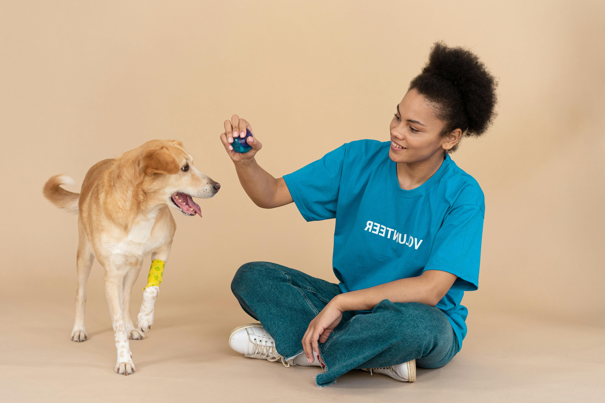
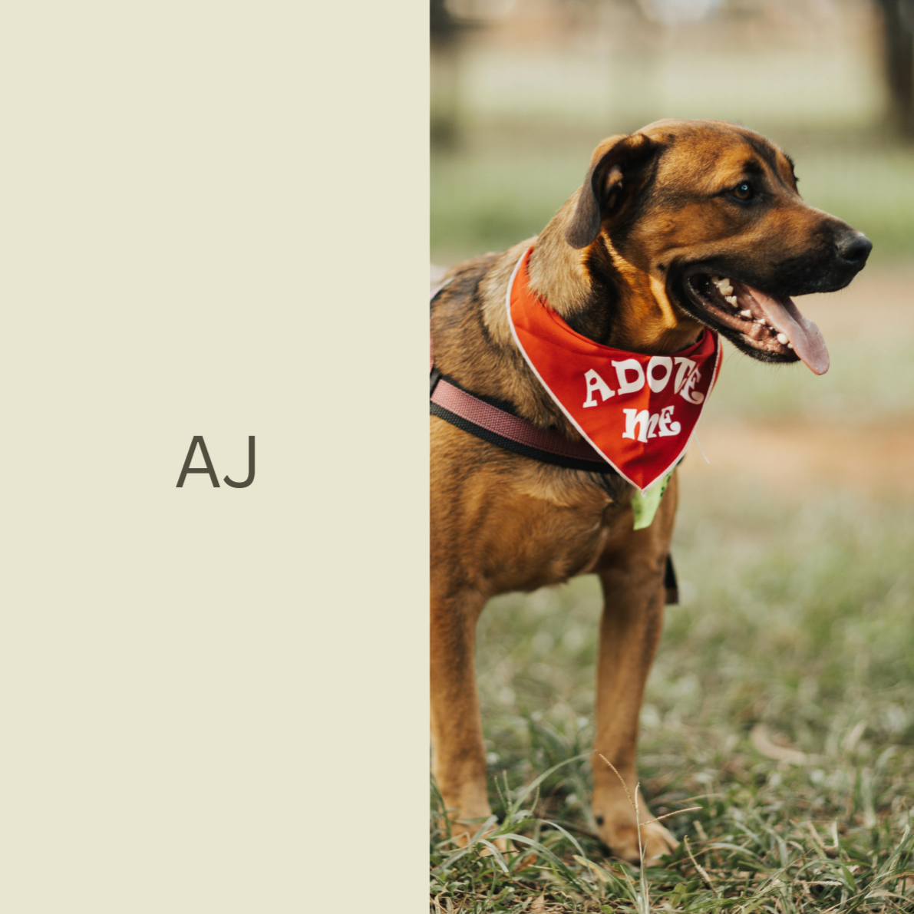
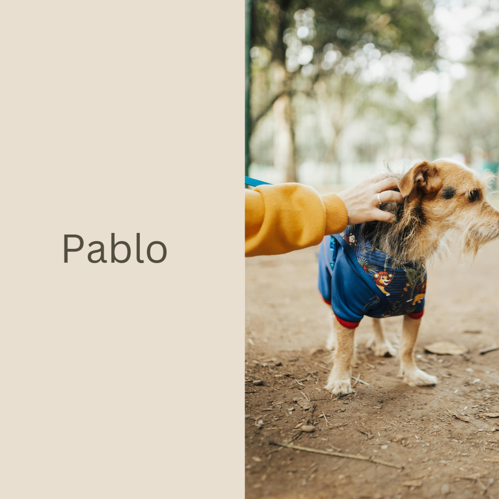
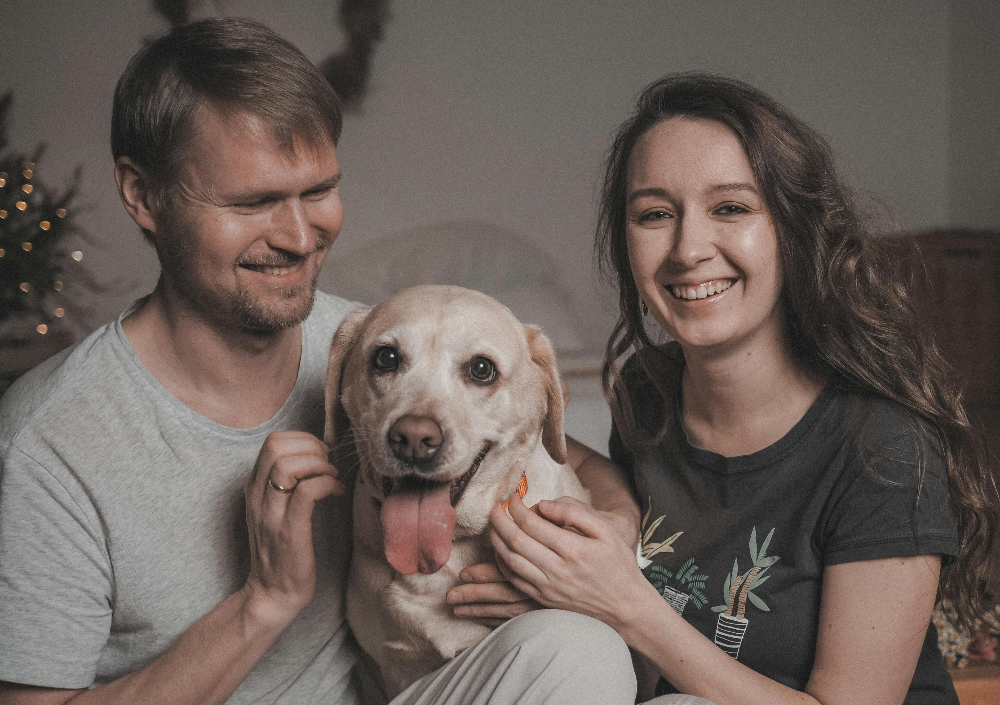

We rescue, rehabilitate, and rehome pets in need, ensuring they find loving, permanent homes. Join us in our mission to make a difference, one adoption at a time.

Featured Pets


Success Stories

Luna, a sweet and energetic Labrador mix, was found wandering the streets alone. She was brought to the shelter, where it became clear that she had an affectionate and playful personality despite her rough start. Luna quickly became a favorite among the shelter staff with her wagging tail and joyful spirit.
A few months after Luna's arrival at the shelter, she caught the eye of Emily and David, a young couple looking to adopt their first pet together. They were immediately drawn to Luna's friendly demeanor and knew she would be the perfect addition to their family.
Ghost, a stunning white German Shepherd, was found abandoned in an industrial area. He was severely underweight and had clearly been neglected for a long time. Despite his harsh past, Ghost had a calm and gentle disposition. The shelter staff named him Ghost because of his ethereal appearance and silent, graceful movements.
When Megan and Tom visited the shelter, they were immediately captivated by Ghost's serene presence. The couple had been looking for a dog to complete their family and felt an instant connection with Ghost.
Volunteer and Support
Volunteer Opportunities
- Dog Walking & Socialization: Spend time walking and playing with our dogs.
- Cat Enrichment: Help our cats stay active and happy.
- Event Assistance: Aid in organizing and running adoption events and fundraisers.
- Foster Care: Provide temporary homes for animals until they find their forever families.
How to Volunteer
Complete our volunteer application form and attend an orientation session. We offer training and support to ensure a rewarding experience.
Support Us
- Donate: Your contributions fund food, medical care, and shelter for our animals.
- Sponsor an Animal: Support a specific animal’s needs until they are adopted.
- Fundraise: Organize events or campaigns to raise funds.
- Spread the Word: Share our mission on social media and with your network.